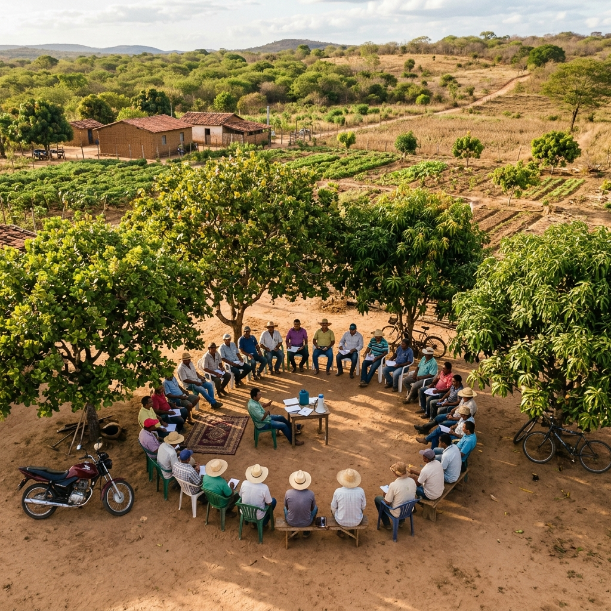
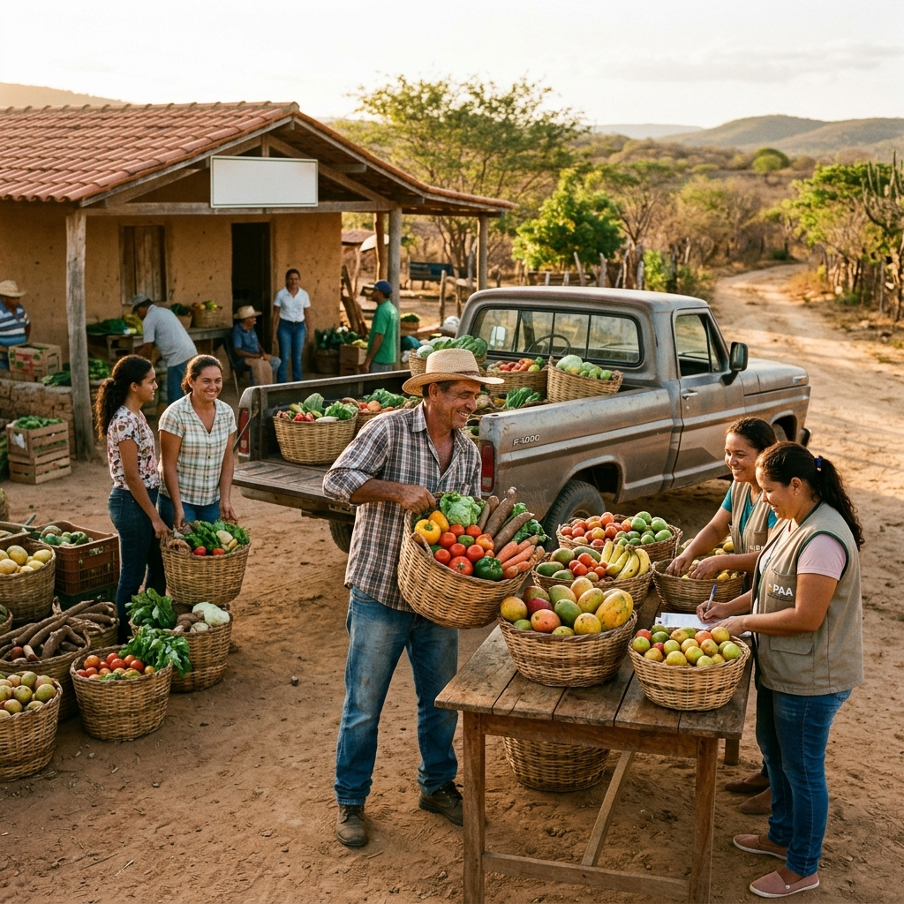
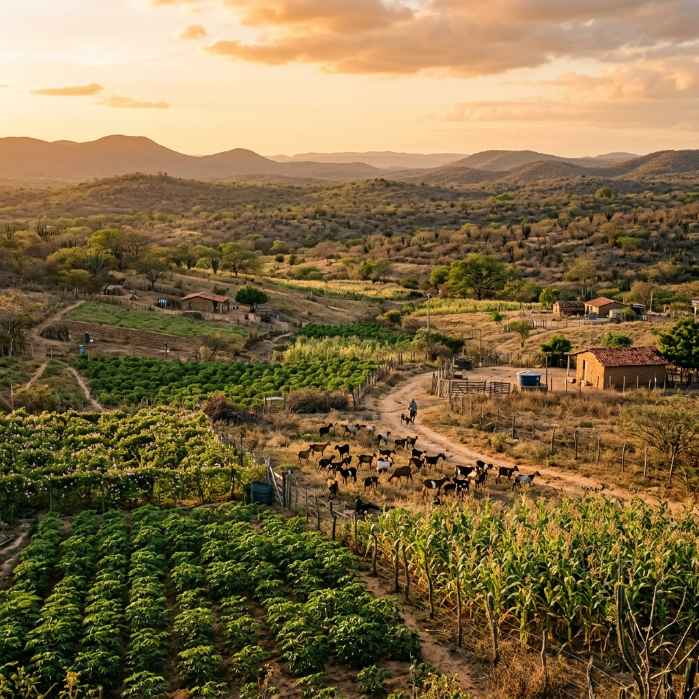
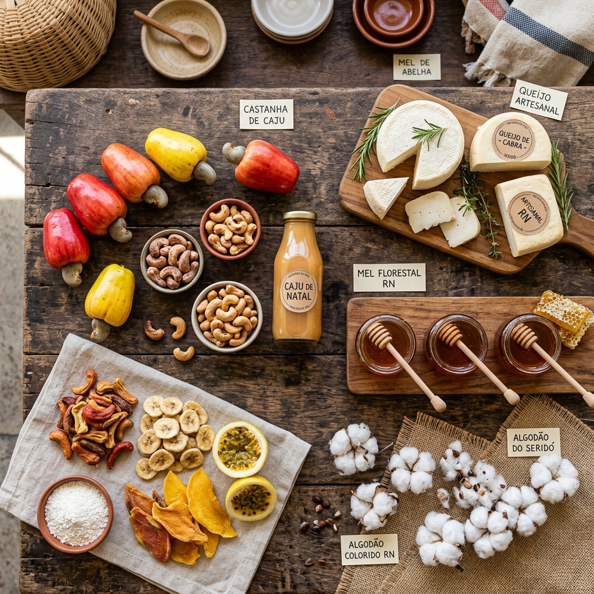
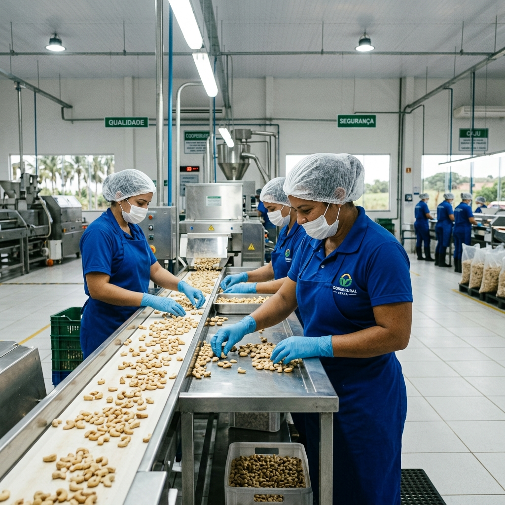
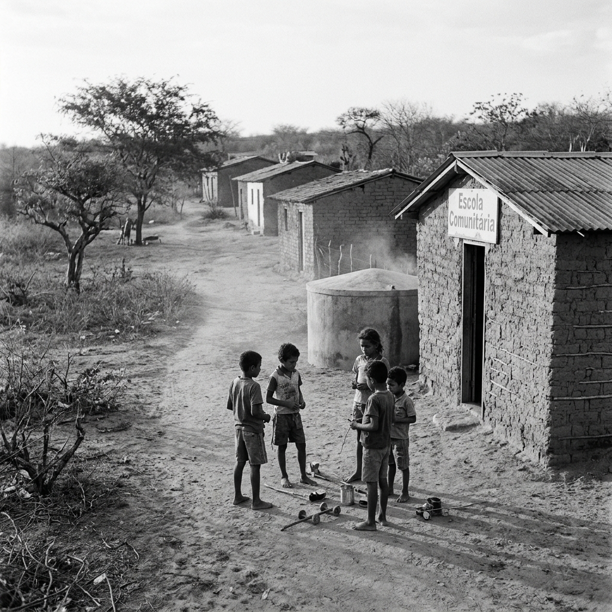

— O PROJETO —
Elaborar o diagnóstico socioeconômico dos empreendimentos rurais de economia solidária do Rio Grande do Norte (RN) com base em dados secundários, estruturando uma base integrada e produtos visuais para subsidiar planejamento e execução do percurso formativo previsto no plano.
Integração de bases secundárias (PAA, Censo Agro, CADSOL) em base temática única.
Análise espacial por município e territórios de identidade oficial do RN.
Construção de tipologias para priorização e orientação de decisões estaduais.
Infográficos, mapas e fichas territoriais com interpretação técnica padronizada.
— MATRIZ DE BASES —
Cada dimensão mobiliza bases de dados específicas para construir o retrato dos empreendimentos rurais.

— DIMENSÃO 1 —
Mapeamento de EES: formas organizativas, atividade econômica e localização territorial no estado.
— DIMENSÃO 2 —
Inserção em compras públicas via PAA e PNAE: execução financeira e logística de fornecimento.


— DIMENSÃO 3 —
Perfil rural, agricultura familiar e vocações produtivas por território.
— DIMENSÃO 4 —
Análise da produção por cultura/rebanho e dinâmica territorial das cadeias produtivas.


— DIMENSÃO 5 —
Contexto de ocupação rura, remuneração e recortes de gênero no território.
— DIMENSÃO 6 —
Indicadores sociais que afetam a organização e produção rural.

— TERRITÓRIOS DE IDENTIDADE —
Todos os indicadores do observatório são estratificados pelos 10 Territórios de Identidade do RN, permitindo comparações e diagnósticos específicos para cada realidade.
— INTELIGÊNCIA DE DADOS —
Utilize nossa inteligência de dados para gerar tabelas e indicadores dinâmicos. Subsidie o planejamento institucional com diagnósticos personalizados por território, período e dimensão do estudo.
— INDICADORES SELECIONADOS —
Evolução histórica (2011-2024) e comparativo do Programa de Aquisição de Alimentos no Rio Grande do Norte integrado ao SISAN.
Fonte: MDS/SAGI · API MiSocial
Fonte: MDS/SAGI · API MiSocial
Fonte: MDS/SAGI · API MiSocial
Fonte: MDS/SAGI · API MiSocial · Dicionário Territorial RN